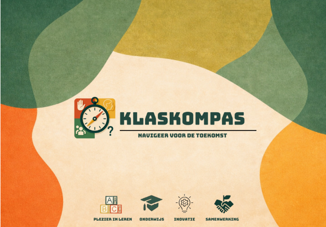

CASE 01 / WEBAPPLICATIE
Klascompas

DE OPDRACHT
Meer overzicht.
Minder ruis.
Klascompas brengt schoolwerk, planning en communicatie samen in een rustige digitale omgeving. Het doel: leerlingen helpen focussen op wat nu belangrijk is.
Hier kun je later screenshots, mockups of een video van het project toevoegen.